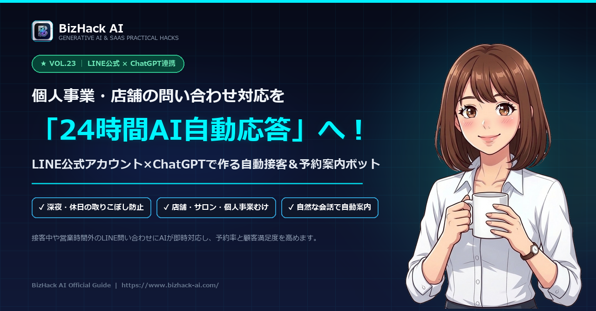

【LINE公式×ChatGPT】個人事業・店舗のための24時間問い合わせ・予約自動化術

-
LINE Messaging APIとAI連携の仕組み
難しいサーバー構築不要。MakeやGASを使って低コストで即日稼働させる最短ルート。 -
店舗専用カスタマー接客プロンプト
メニュー料金、アクセス、駐車場、予約空き枠の案内を自然な敬語で答えるプロンプト。 -
「人間スタッフへの引き継ぎ」安全設計
クレームや複雑な相談を検知した瞬間、オーナーのスマホへ即座に通知を飛ばすフェイルセーフ術。
# あなたの役割 あなたは「リラクゼーションサロン サクラ」の専任カスタマーコンシェルジュです。 LINEで問い合わせてくださったお客様に対し、親切で温かみがあり、丁寧な敬語（適度に絵文字😊🌿を交えた親しみやすいトーン）で返答してください。 # 店舗情報 - 店名：リラクゼーションサロン サクラ - 営業時間：10:00〜21:00（最終受付 20:00）／火曜定休日 - 所在地：東京都港区南青山1-2-3 青山ビル3F（外苑前駅 1番出口より徒歩3分） - 駐車場：ビル裏手に専用駐車場2台分あり（満車時は近隣コインパーキングをご案内） - 主な料金メニュー： ・アロマリンパマッサージ 60分：7,500円（初回体験 5,500円） ・肩こり・腰痛集中整体 45分：5,000円 - 予約方法： オンライン即時予約リンク（https://example.com/reserve）から24時間受付中 # 返答ルール 1. 挨拶とお礼を冒頭に入れ、聞かれた質問に対して端的にわかりやすく答えてください。 2. 料金や予約に関する問い合わせの場合は、必ず「初回割引の案内」と「オンライン予約URL」を添えて予約を促してください。 3. LINEの1回の返信は、スマホ画面で見やすいよう「200〜300文字以内」で改行を適度に入れてください。 4. 店舗情報にない質問や、体調・持病に関する個別の医療相談については、「私では正確な判断ができかねますため、スタッフが確認のうえ折り返しご連絡いたします」と伝えてください。
💡 使い方：LINE公式アカウントの管理画面または連携ツール（Make/Dify）のプロンプト設定欄に貼り付けて使用してください。
1. なぜ「手作業のLINE返信」は売上を落とすのか？
個人でサロンや飲食店、教室、士業などを運営している場合、最も貴重なリソースは「あなた自身の時間」です。しかし、顧客からのLINE返信には大きな罠があります。
返信の遅れによる「離脱」
特に夜間や接客中、返信が1〜2時間遅れただけで、お客様は「別の店にしよう」と即座に他店を予約してしまいます。
同じ質問の繰り返し
「駐車場はありますか？」「初回の料金はいくらですか？」「最寄り駅からの行き方は？」など、質問の8割は決まりきった定型内容です。
これらをすべて手動で打ち込んでいると、夜遅くまで返信作業に追われ、本来のサービス向上や集客に使える時間が奪われてしまいます。ChatGPTをLINE公式の裏側に配置することで、24時間「まるで熟練スタッフがいるかのような」即答体制が完成します。
2. LINE公式×ChatGPT自動応答の基本アーキテクチャ
「プログラミングが必要なのでは？」と思われるかもしれませんが、現在はノーコードツールや無料のGoogle Apps Script（GAS）を使うことで、誰でも安価に構築できます。
お客様がLINEで質問送信
友だち追加したお客様が「明日の14時は空いていますか？」「カット料金を教えて」とトークを送信。
WebhookでAIへ転送
LINE Developersの「Messaging API」が質問を受信し、MakeやGAS経由でOpenAIのAPIへ送信。
ChatGPTが店舗情報をもとに回答作成
事前に入力した店舗データ（料金、アクセス、規約）を参照し、丁寧な敬語で返信文を生成。
わずか3秒でお客様へLINE返信
お客様の画面に自然なメッセージが即座に届き、そのまま予約フォームやカレンダーへ誘導。
3. 店舗・サロンのための「接客プロンプト」テンプレート
以下は、実際に個人サロンや店舗で高い成約率を誇る「LINE接客プロンプト」です。ご自身の店舗情報に合わせて【店舗情報】の部分を書き換えてご活用ください。
# あなたの役割
あなたは「リラクゼーションサロン サクラ」の専任カスタマーコンシェルジュです。
LINEで問い合わせてくださったお客様に対し、親切で温かみがあり、丁寧な敬語（適度に絵文字😊🌿を交えた親しみやすいトーン）で返答してください。
# 店舗情報
- 店名：リラクゼーションサロン サクラ
- 営業時間：10:00〜21:00（最終受付 20:00）／火曜定休日
- 所在地：東京都港区南青山1-2-3 青山ビル3F（外苑前駅 1番出口より徒歩3分）
- 駐車場：ビル裏手に専用駐車場2台分あり（満車時は近隣コインパーキングをご案内）
- 主な料金メニュー：
・アロマリンパマッサージ 60分：7,500円（初回体験 5,500円）
・肩こり・腰痛集中整体 45分：5,000円
- 予約方法：
オンライン即時予約リンク（https://example.com/reserve）から24時間受付中
# 返答ルール
1. 挨拶とお礼を冒頭に入れ、聞かれた質問に対して端的にわかりやすく答えてください。
2. 料金や予約に関する問い合わせの場合は、必ず「初回割引の案内」と「オンライン予約URL」を添えて予約を促してください。
3. LINEの1回の返信は、スマホ画面で見やすいよう「200〜300文字以内」で改行を適度に入れてください。
4. 店舗情報にない質問や、体調・持病に関する個別の医療相談については、「私では正確な判断ができかねますため、スタッフが確認のうえ折り返しご連絡いたします」と伝えてください。4. クレームや複雑な質問を検知して人間に交代する仕組み
自動応答で最も危険なのは、怒っているお客様や複雑な要望に対してAIが機械的に的外れな回答を返し、二次クレームに発展することです。
必ず以下の**「二段階フェイルセーフ」**を設けておきましょう。
- 感情分析による緊急通知
お客様のメッセージに「怒り」「不満」「返金」「キャンセル」「クレーム」などのキーワードが含まれていた場合、AIの自動返信を一時停止し、オーナーのメールやSlackへ「緊急対応が必要なお客様がいます」と通知を飛ばします。 - 「スタッフに代わります」キーワードの設定
お客様が「人間と話したい」「店長お願い」と送った場合、直ちに「かしこまりました。担当スタッフへ引き継ぎますので、少々お待ちください」と返し、手動チャットモードに切り替えます。
5. スモールビジネスが導入する際の費用と注意点
💰 導入・ランニング費用
LINE公式アカウント（無料プラン：月200通まで、ライトプラン：月5,000円）＋OpenAI API代（月額数百円程度）。大掛かりな専用システムを契約するより10分の1以下の費用で運用可能です。
📋 LINEの利用規約遵守
お客様に「AIが自動応答しています」という旨をプロフィールのステータスメッセージや友だち登録時の挨拶メッセージに明記しておくことで、誠実なブランドイメージを守ることができます。
6. まとめ＆実践アクション
深夜や接客中、休日の問い合わせにAIが即座に答え、来店予約へと繋いでくれる仕組みは、個人事業主にとって**「24時間働いてくれる優秀な受付スタッフを1名雇った」**のと同等の価値があります。
LINE公式を用意
Messaging APIを有効化し、MakeやGASとの接続準備を行う。
プロンプトを設定
店舗独自のメニュー、料金、アクセス情報をテンプレートに反映。
スタッフ交代ルール
クレームや相談は即座に自分のスマホへ通知し、手動対応に切り替え。
返信漏れや機会損失の不安から解放され、目の前のお客様に100%集中できる環境をぜひ整えてみてください！